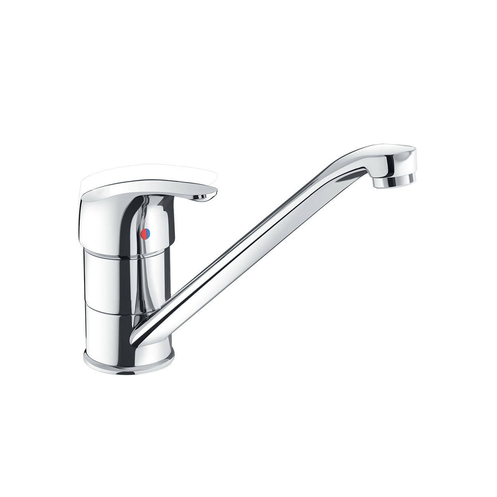
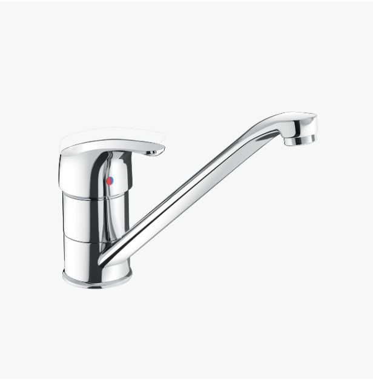
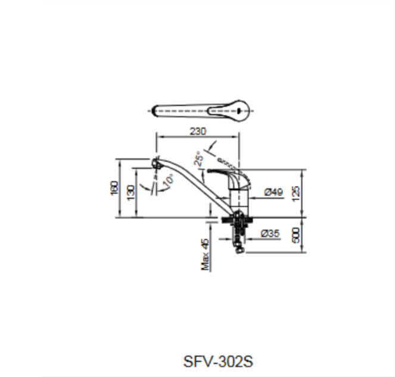

Nâng tầm căn bếp hiện đại của bạn với vòi bếp SFV-302S, một sản phẩm được thiết kế để tối ưu hóa không gian, đảm bảo vệ sinh và mang lại độ bền vượt trội. Đây là sự lựa chọn hoàn hảo cho những ai ưu tiên sự tiện lợi, an toàn và tuổi thọ sản phẩm lâu dài trong khu vực nấu nướng bận rộn.Đặc điểm nổi bật của Vòi bếp SFV-302SThiết kế cổ ngỗng tinh tế, tối ưu không gianTiết kiệm không gian căn bếp: Vòi bếp SFV-302S sở hữu thiết kế cổ ngỗng cứng với kích thước cân đối 160 x 230mm (Cao x Rộng). Dáng vòi cao và thanh mảnh này giúp tiết kiệm không gian trên mặt bếp, tạo cảm giác gọn gàng, thoáng đãng hơn.Linh hoạt vượt trội: Dù có dáng cứng cáp, vòi vẫn có thể xoay dễ dàng giữa hai bồn rửa chén, làm cho việc sơ chế thực phẩm và rửa dọn chén bát trở nên linh hoạt và thuận tiện hơn bao giờ hết, đặc biệt phù hợp với các loại chậu rửa đôi.Thao tác êm ái: Tay gạt giúp bạn nhanh chóng điều chỉnh nhiệt độ và lưu lượng nước một cách chính xác và nhẹ nhàng, tối ưu hóa thời gian và công sức trong các công việc bếp núc.Độ bền cao với tuổi thọ trên 10 nămVòi chậu rửa bếp SFV-302S được chế tạo từ những vật liệu hàng đầu, đặt yếu tố an toàn và độ bền lên hàng đầu, cam kết mang lại sản phẩm có tuổi thọ trên 10 năm.Phần thân vòi được làm từ chất liệu đồng thau cao cấp, một vật liệu được tin dùng vì tính bền bỉ và đặc biệt là khả năng không gây nhiễm khuẩn cho nước, đảm bảo nguồn nước sử dụng cho nấu ăn luôn sạch sẽ và an toàn tuyệt đối cho sức khỏe gia đình bạn.Ngoài ra, bề mặt vòi được phủ lớp mạ Crom-Niken sáng bóng, chống ăn mòn hiệu quả. Lớp mạ này không chỉ tăng tính thẩm mỹ mà còn giúp vòi dễ dàng vệ sinh, chống lại tác động của dầu mỡ và các chất tẩy rửa thường dùng trong bếp.Tính năng thông minh, tiện íchVòi bếp còn được trang bị những tính năng nhỏ nhưng hữu ích, nâng cao trải nghiệm sử dụng hàng ngày như:Phun bọt chống bắn: Vòi có khả năng phun bọt, làm mềm dòng chảy của nước. Điều này giúp chống bắn nước hiệu quả, giữ cho khu vực bếp luôn khô ráo và sạch sẽ, đồng thời tạo cảm giác dễ chịu khi rửa tay hoặc rửa rau củ.Lắp đặt đơn giản: Thiết kế thông minh cho phép dễ dàng lắp đặt sản phẩm mà không cần quá nhiều thao tác phức tạp.Tóm lại, vòi bếp nóng lạnh INAX SFV-302S là một sự đầu tư thông minh, mang lại sự tiện nghi, an toàn vệ sinh và một vẻ đẹp bền vững cho căn bếp, nơi mọi thành viên trong gia đình bạn cùng nhau tạo nên những bữa ăn ngon.Mọi thắc mắc hoặc cần hỗ trợ về sản phẩm và bảo hành, vui lòng liên hệ Hotline tư vấn và bảo hành: 18006633.Bản vẽ Vòi bếp SFV-302SThông số kỹ thuậtTên sản phẩmVòi bếp SFV-302SChất liệu- Chất liệu đồng thau không gây nhiễm khuẩn cho nước. - Mạ Crom-NikenKích thước160 x 230 (Cao x Rộng)Tính năng- Tay gạt êm ái, giúp nước nhanh chóng chảy ra và dễ dàng điều chỉnh nhiệt. - Tuổi thọ trên 10 năm. - Phun bọt chống bắn.Thương hiệuINAXThiết kế- Dạng cổ ngỗng cứng giúp tiết kiệm không gian cho căn bếp - Có thể xoay dễ dàng giữa hai bồn rửa - Dễ dàng lắp đặtKhác- Hotline tư vấn và bảo hành: 18006633
Vòi bếp SFV-302S
Vòi bếp thương hiệu INAX.
Đã cập nhật danh sách yêu thích.
DANH MỤC: Vòi bếp
MÃ SẢN PHẨM: SFV-302S
DEPTH: 0mm
HEIGHT: 160mm
WIDTH: 230mm
Nâng tầm căn bếp hiện đại của bạn với vòi bếp SFV-302S, một sản phẩm được thiết kế để tối ưu hóa không gian, đảm bảo vệ sinh và mang lại độ bền vượt trội. Đây là sự lựa chọn hoàn hảo cho những ai ưu tiên sự tiện lợi, an toàn và tuổi thọ sản phẩm lâu dài trong khu vực nấu nướng bận rộn.Đặc điểm nổi bật của Vòi bếp SFV-302SThiết kế cổ ngỗng tinh tế, tối ưu không gianTiết kiệm không gian căn bếp: Vòi bếp SFV-302S sở hữu thiết kế cổ ngỗng cứng với kích thước cân đối 160 x 230mm (Cao x Rộng). Dáng vòi cao và thanh mảnh này giúp tiết kiệm không gian trên mặt bếp, tạo cảm giác gọn gàng, thoáng đãng hơn.Linh hoạt vượt trội: Dù có dáng cứng cáp, vòi vẫn có thể xoay dễ dàng giữa hai bồn rửa chén, làm cho việc sơ chế thực phẩm và rửa dọn chén bát trở nên linh hoạt và thuận tiện hơn bao giờ hết, đặc biệt phù hợp với các loại chậu rửa đôi.Thao tác êm ái: Tay gạt giúp bạn nhanh chóng điều chỉnh nhiệt độ và lưu lượng nước một cách chính xác và nhẹ nhàng, tối ưu hóa thời gian và công sức trong các công việc bếp núc.Độ bền cao với tuổi thọ trên 10 nămVòi chậu rửa bếp SFV-302S được chế tạo từ những vật liệu hàng đầu, đặt yếu tố an toàn và độ bền lên hàng đầu, cam kết mang lại sản phẩm có tuổi thọ trên 10 năm.Phần thân vòi được làm từ chất liệu đồng thau cao cấp, một vật liệu được tin dùng vì tính bền bỉ và đặc biệt là khả năng không gây nhiễm khuẩn cho nước, đảm bảo nguồn nước sử dụng cho nấu ăn luôn sạch sẽ và an toàn tuyệt đối cho sức khỏe gia đình bạn.Ngoài ra, bề mặt vòi được phủ lớp mạ Crom-Niken sáng bóng, chống ăn mòn hiệu quả. Lớp mạ này không chỉ tăng tính thẩm mỹ mà còn giúp vòi dễ dàng vệ sinh, chống lại tác động của dầu mỡ và các chất tẩy rửa thường dùng trong bếp.Tính năng thông minh, tiện íchVòi bếp còn được trang bị những tính năng nhỏ nhưng hữu ích, nâng cao trải nghiệm sử dụng hàng ngày như:Phun bọt chống bắn: Vòi có khả năng phun bọt, làm mềm dòng chảy của nước. Điều này giúp chống bắn nước hiệu quả, giữ cho khu vực bếp luôn khô ráo và sạch sẽ, đồng thời tạo cảm giác dễ chịu khi rửa tay hoặc rửa rau củ.Lắp đặt đơn giản: Thiết kế thông minh cho phép dễ dàng lắp đặt sản phẩm mà không cần quá nhiều thao tác phức tạp.Tóm lại, vòi bếp nóng lạnh INAX SFV-302S là một sự đầu tư thông minh, mang lại sự tiện nghi, an toàn vệ sinh và một vẻ đẹp bền vững cho căn bếp, nơi mọi thành viên trong gia đình bạn cùng nhau tạo nên những bữa ăn ngon.Mọi thắc mắc hoặc cần hỗ trợ về sản phẩm và bảo hành, vui lòng liên hệ Hotline tư vấn và bảo hành: 18006633.Bản vẽ Vòi bếp SFV-302SThông số kỹ thuậtTên sản phẩmVòi bếp SFV-302SChất liệu- Chất liệu đồng thau không gây nhiễm khuẩn cho nước. - Mạ Crom-NikenKích thước160 x 230 (Cao x Rộng)Tính năng- Tay gạt êm ái, giúp nước nhanh chóng chảy ra và dễ dàng điều chỉnh nhiệt. - Tuổi thọ trên 10 năm. - Phun bọt chống bắn.Thương hiệuINAXThiết kế- Dạng cổ ngỗng cứng giúp tiết kiệm không gian cho căn bếp - Có thể xoay dễ dàng giữa hai bồn rửa - Dễ dàng lắp đặtKhác- Hotline tư vấn và bảo hành: 18006633
DANH MỤC: Vòi bếp
MÃ SẢN PHẨM: SFV-302S
DEPTH: 0mm
HEIGHT: 160mm
WIDTH: 230mm